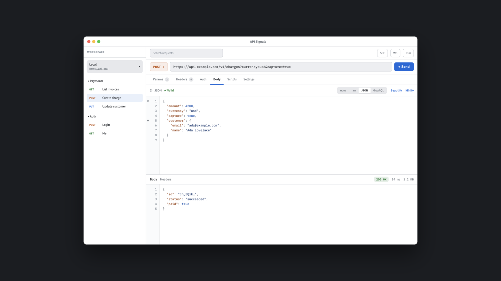
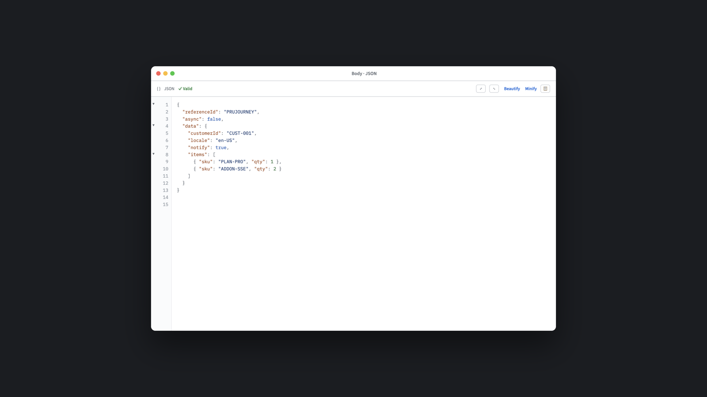
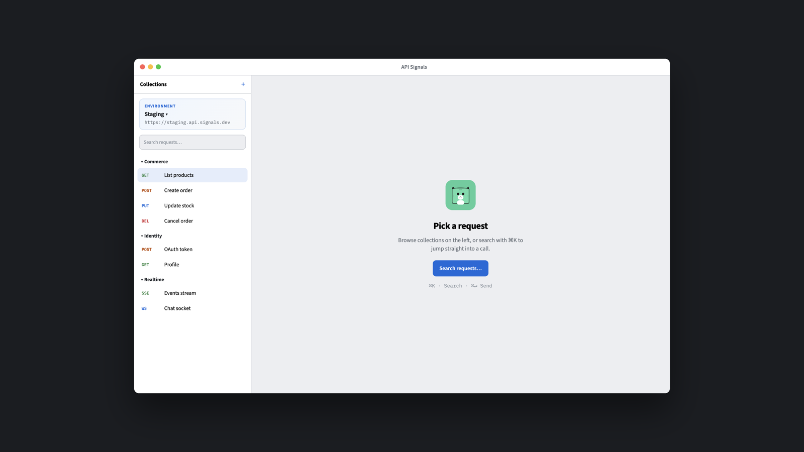

Native API client. Offline by design.
Send requests, shape JSON, and keep every workspace on your Mac — no account, no sync tax.
Product
Request, body, and response in one native window — collections on the left, signal on the right.



Why native
Built with SwiftUI and AppKit for macOS — feel like a system app, run entirely from local SQLite.
Capabilities
Request editing, response inspection, collections, and imports — tuned for speed on Apple silicon.
Platforms
Swift 6 · SwiftUI · AppKit · GRDB. Open the app bundle or build with SwiftPM.
WinUI 3 path is sketched for later parity — macOS leads the product.
Get started
macOS 14+ and a Swift 6 toolchain. Clone, build, codesign, open.
# from repo root cd macOS swift build -c release cp -f .build/release/APISignalsApp APISignals.app/Contents/MacOS/APISignals codesign --force --deep --sign - APISignals.app open -n APISignals.app